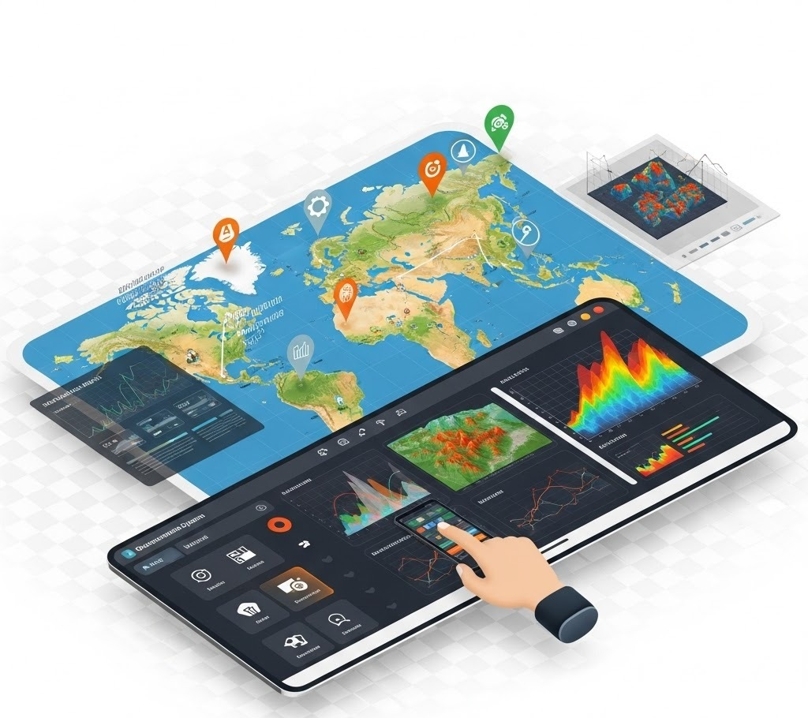
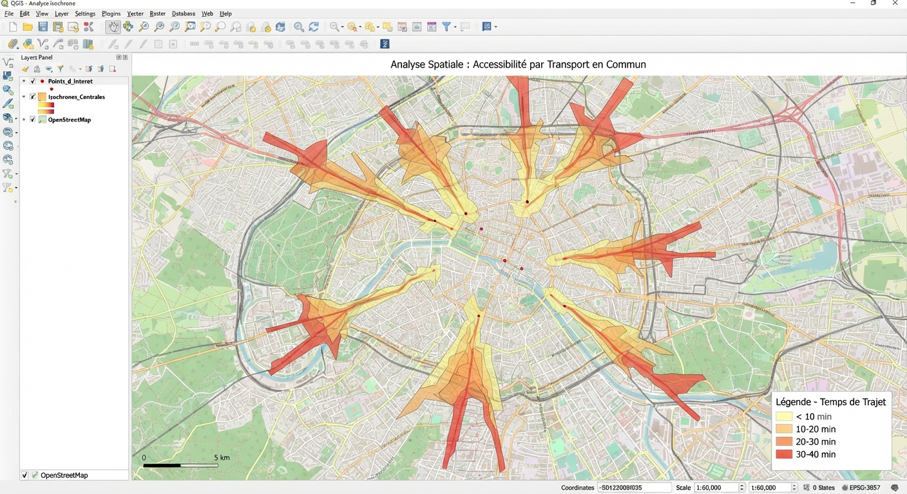
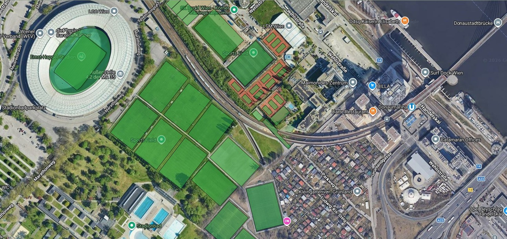
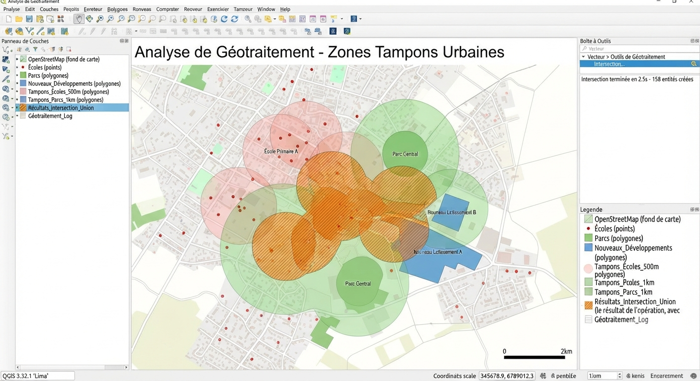
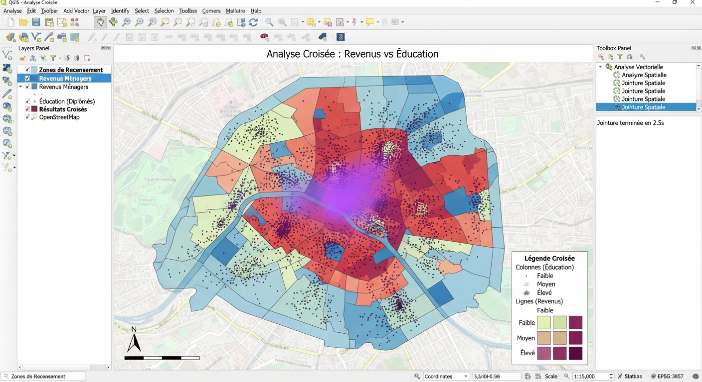
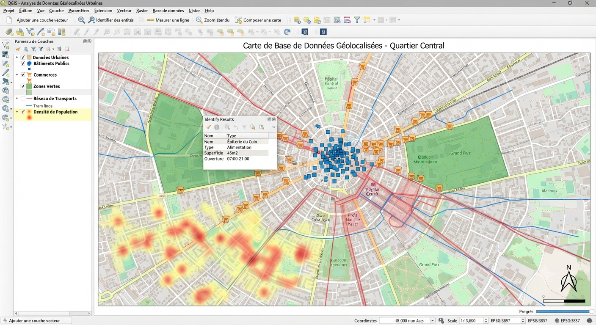

Le SIG transforme une donnée géolocalisée brute en connaissance exploitable : cartographier, croiser, analyser et automatiser tout ce qui a une position dans l'espace.
Avant de choisir un outil, nous qualifions le besoin : quelles données existent, quelle précision est nécessaire, qui doit accéder à l'information et pour quelle décision.
Chaque mission couvre la chaîne complète (collecte ou récupération des données, structuration, analyse, restitution cartographique) avec un objectif : une information fiable, à jour et exploitable par vos équipes.

Zones d'influence, isochrones, densité de population, croisement multicouches : l'analyse spatiale répond à des questions concrètes de couverture, d'accessibilité et de priorisation territoriale.

Le géomarketing croise données commerciales et données géographiques pour orienter la prospection, la couverture terrain et l'allocation des ressources commerciales.

Scripts Python, plugins QGIS sur mesure, chaînes de conversion : chaque tâche répétitive est un candidat à l'automatisation, pour gagner en fiabilité autant qu'en temps.

Données socio-démographiques, référentiels IGN, données métier internes : le croisement de sources permet de construire des indicateurs territoriaux inédits, propres à votre activité.

Modéliser avant de stocker : la qualité d'une base spatiale se joue dans sa conception, modèle de données, droits d'accès, évolutivité.

Décrivez-nous votre projet, nous vous recommandons la stack adaptée.